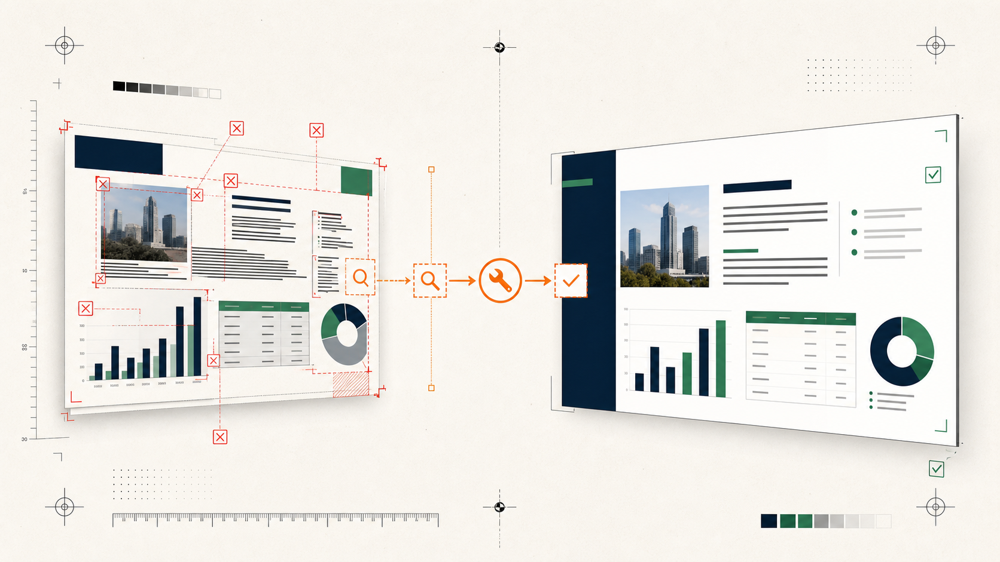

LOCAL POWERPOINT PREFLIGHT
Is this PowerPoint ready to send?
See the delivery risks before your audience does. PPTLint flags clipping risks, substantial overlaps, flattened slides, hidden notes and broken files that should be checked before an AI-generated deck is sent.
LOCALREAD-ONLYNO UPLOADNO MODEL

BEFORE / 103 ISSUES AFTER / READYReal editable deck49 → 100
BEFOREBroken links, dense content and delivery risks exposed.
AFTERFocused repairs, zero new high-confidence problems.
Ask your coding agent
Install PPTLint and check whether this PowerPoint is ready to send. Show me the slides I must fix first and the exact PowerPoint steps.
uvx pptlint check output.pptx --profile ai-generated
Already have the original and edited copy? Create the complete before/after evidence pack in one command.
uvx pptlint proof before.pptx after.pptx --profile ai-generated --output comparison
Four delivery questions, then three distinct actions
A real editable PowerPoint improvement
Ultimate PPT Master created a nine-slide editable presentation. The first check exposed broken internal relationships and other delivery risks. After focused changes, all score deductions were removed. PPTLint still asks the user to review speaker notes and keeps three possible overlaps as suggestions rather than blockers.
49 → 100before and after
103reported items resolved
0new high-confidence problems

The original files and complete offline reports are published so anyone can inspect the evidence.